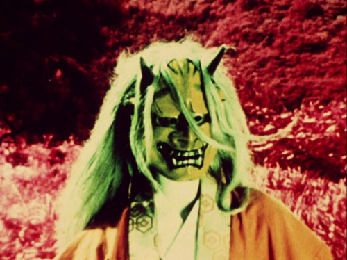

For the Damaged Right Eye
Matsumoto Toshio: 3 Films 1968 - 1975
April 27 - May 25, 2014
Shoot The Lobster
138 Eldridge Street
New York, NY 10002
STL is pleased to announce an exhibition of three films by the innovative Japanese filmmaker and video artist Matsumoto Toshio. One of the leading figures of the postwar avant-garde, Matsumoto is a pioneer of experimental film and avant-garde documentary, as well as an influential film critic. His work is representative of the urgency of its era and of the radical changes the medium was undergoing at the time. In many of his films, Matsumoto expands the scope of documentary to include the private reality of his subjects and the very act of perception itself. In his essay “A Theory of Avant-Garde Documentary,” he writes: “We should grasp the totality of the conflict and the unity between the exterior world and the interior world, aiming for a synthesis of both in the possibilities of a new form of film.”1
This exhibition presents a selection of rarely screened experimental films by Matsumoto that show the range of his investigations into new methods of filmmaking.
Projected in the space is Matsumoto’s film “For the Damaged Right Eye” (つぶれかかった右眼のために) (1968). Presented at the symposium “Expose 1968” at the Sogetsu Art Center,2 it juxtaposes images of student protests, popular television, 60s psychedelia, scenes from the Shinjuku gay scene, and graphic art by his contemporaries in a captivating montage that reflects the chaotic ethos of its moment.
Also on display are two other short films:
“Andy Warhol Re-Reproduction” (アンディ・ウォーホル：複々製) (1974) is an abstracted portrait of Andy Warhol at one of his openings, accompanied by a musique concrète score by Joji Yuasi.
Matsumoto’s hypnotic “Atman” (アートマン) (1975) is a formal exercise in experimental film consisting of hundreds of zooming and panning stills of a figure clad in a Noh mask, with an electronic score by Toshi Ichiyanigi.
All films are presented as Blu-Ray transfers of 16mm and are courtesy the artist and the Postwar Japan Moving Image Archive. This exhibition was organized by Alexander Shulan. Special thanks to Hirofumi Sakamoto.
1 Matsumoto, Toshio, “A Theory of Avant-Garde Documentary,” translated by Michael Raine, Cinema Journal 51.4 (2012): 148-54.↩
2 Furuhata, Yuriko, Cinema of Actuality: Japanese Avant-Garde Filmmaking in the Season of Image Politics, (Durham: Duke University Press, 2013): 48.↩
Shoot The Lobster
contact@shootthelobster.com
www.shootthelobster.com